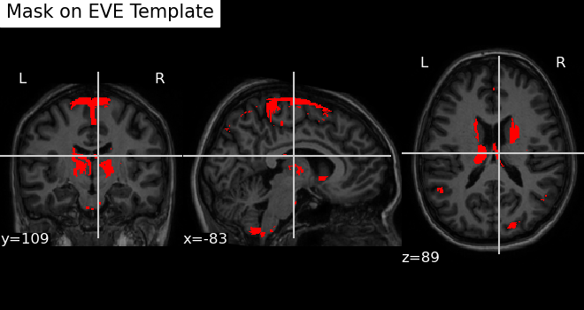

Introduction to MRIreduce
MRIreduce.RmdROI Reference Table Overview
There are 130 ROIs in total. Below is a table showing the indication
relation for each ROI, including the index (tind), the text
label (roi_text_label), and the ROI identification
(roi):
Process T1-weighted Brain MRI Data with FSL and Register to EVE Atlas
Ensure FSL is installed as per the instructions provided in the package README.
This section demonstrates optional external-tooling workflows. The code chunks are shown for reference only and are not executed when the vignette is built.
This vignette outlines the sequential steps involved in the image processing pipeline, designed to prepare and analyze T1-weighted brain MRI data effectively:
- Image Reorientation: Adjusts the image to align with a standard orientation, facilitating consistent analyses and comparisons.
- Bias Correction: Reduces scanner-induced intensity inhomogeneities to improve tissue contrast and measurement accuracy.
- Brain Extraction: Isolates the brain from surrounding skull and other non-brain tissues, which is critical for accurate subsequent analyses.
- Image Registration (EVE template): Aligns the MRI data to the EVE Atlas, ensuring that anatomical regions are correctly mapped and comparable across datasets.
- Extraction of Intensity Data: Gathers crucial signal intensity information from the brain images, which is fundamental for detailed tissue analysis.
- Segmentation: Divides the brain into White Matter (WM), Gray Matter (GM), and Cerebrospinal Fluid (CSF), allowing for targeted studies of these distinct tissue types.
- Extraction of Tissue Mask Array Data: Retrieves detailed spatial information about tissue distribution, essential for volume and location-specific studies.
- Intracranial Brain Volume Calculation: Computes the total brain volume, providing a baseline for various comparative and diagnostic assessments.
By following these structured steps, users can ensure comprehensive processing of MRI data, facilitating robust analyses and research conclusions.
eve_T1(fpath, outpath, fsl_path , fsl_outputtype = "NIFTI_GZ")fpath: A character string specifying the path to one T1-weighted MRI file. The file should be in NIFTI file format (.nii.gz). Processing may take some time, so please be patient. For handling multiple MRI files, consider using parallel processing with R’s parallel computation packages or through high-performance computing resources to improve efficiency.
Sample outcome:
#> [1] 181 217 181Run Partition Pipeline on Neuroimaging Data
This section describes how to utilize the pipeline for processing neuroimaging data through sequential application of sophisticated algorithms and segmentation based on Regions of Interest (ROIs).
Pipeline Overview:
- Super-Partition: Applies Josh’s super-partition algorithm, which considers 3D locations to group data based on ROIs.
- Partition Algorithm: Processes data post Super-Partition using the Partition algorithm, enhancing data reduction for highly correlated data.
- Tissue Segmentation: Segments the processed data by tissue type within each ROI.
Practical Example:
To process the ROI named “inferior_frontal_gyrus”, identify the
corresponding tind (in this example, tind = 5)
from the Region Labels and Structures section. You’ll
need to set up a directory to manage all processing files and datasets.
Note that the outputs from this pipeline will not be returned directly
but will be stored at specified locations:
- Intensity data: /main_dir/partition/roi/thresh/tissue_type/cmb/intensities_whole.rds
- Volume data: /main_dir/partition/roi/thresh/tissue_type/cmb/volume_whole.rds
Parallel Processing:
This function is equipped with parallel processing capabilities, allowing users to specify the number of cores they wish to utilize. Increasing the number of cores will proportionally speed up the Partition process, offering significant time savings for large datasets.
# Run the partition pipeline with specified parameters
run_partition_pipeline(
tind = 5,
nfl = list.files(
'/Users/jinyaotian/Downloads/pipeline_test/eve_t1',
full.names = TRUE
),
main_dir = "/Users/jinyaotian/Downloads/pipeline_test",
tissue_type = 2,
ICC_thresh_vec = c(0.8, 0.9),
num_cores = 4,
suppar_thresh_vec = seq(0.7, 1, 0.01),
B = 2000,
outp_volume = TRUE
)Reduced data showcase
Intensity:
Naming convention:
There are two types of feature naming formats:
-
“inferior_frontal_gyrus_left_module6_reduced_var_2”:
-
First part: “inferior_frontal_gyrus_left”
corresponds to the
roi_text_label, which refers to the region of interest (ROI) as outlined in the ROI Reference Table Overview above. - Second part: “module6” indicates that this feature belongs to group 6 after the Super-Partition process. Users can disregard this part, as it is primarily for programming purposes.
- Third part: “reduced_var_2” signifies that this is the second reduced feature within “module6” following the Partition process.
-
First part: “inferior_frontal_gyrus_left”
corresponds to the
- “inferior_frontal_gyrus_left_V20234”: This format indicates that the feature has not been reduced by the Partition algorithm. “V20234” refers to column 20234 in the original high-dimensional data.
Map Reduced Feature to Brain Image Voxel Locations
Each voxel in a brain image corresponds to a specific feature, establishing a one-to-one mapping between a voxel and a feature. This relationship allows us to localize particular brain features to specific brain areas at the voxel level, enabling visualization of these features. However, after applying Super-Partition and Partition techniques, multiple brain features are aggregated into a single reduced feature as part of a data reduction process. The goal of the following function is to relate the reduced feature back to its component features, and subsequently identify the brain image voxels to which those component features are mapped.
For example, we want to analyze the reduced feature “inferior_frontal_gyrus_left_module4_reduced_var_13”.
loc_df <- map_feature2_loc(feature_name = "inferior_frontal_gyrus_left_module4_reduced_var_13",
threshold = 0.8,
main_dir = "/path/to/data")Below, shows loc_df dataset of reduced feature “inferior_frontal_gyrus_left_module4_reduced_var_13”.
It shows that reduced feature “inferior_frontal_gyrus_left_module4_reduced_var_13” is aggregated by 488 features “V14942”, “V14943”, “V14894”, “V19659”, “V21519”, “V21520”, “V4237”, “V6245”, “V4809”, “V3634”……
Visualizing a Mask Image on the EVE Template
In the section Mapping Reduced Features to Brain Image Voxel Locations, we learned how to map features of interest to brain image voxels on the EVE template. Now, we will visualize this mapping.
To achieve this, we use the nilearn.plotting.plot_anat
function from the Python nilearn library. Detailed
documentation about this function can be found at the following
link:
Plot Anatomical Image - nilearn.plot_anat Documentation
Here is an example below:
This helper requires a Python environment configured for
reticulate with nilearn, nibabel,
and matplotlib.
map2_eve(mask_img_path = "~/mask_nifti_GM_Volume_pm25_test1_avg_red.nii.gz",
save_path = '~/test.png',
title = "Mask on EVE Template" )Note: mask_img_path should point to a mask NIfTI image
generated from voxel locations of interest.
